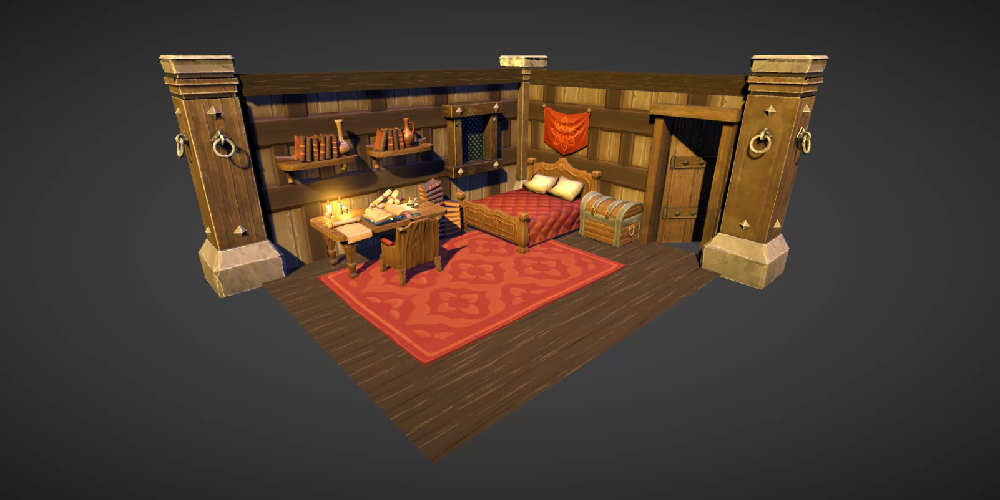
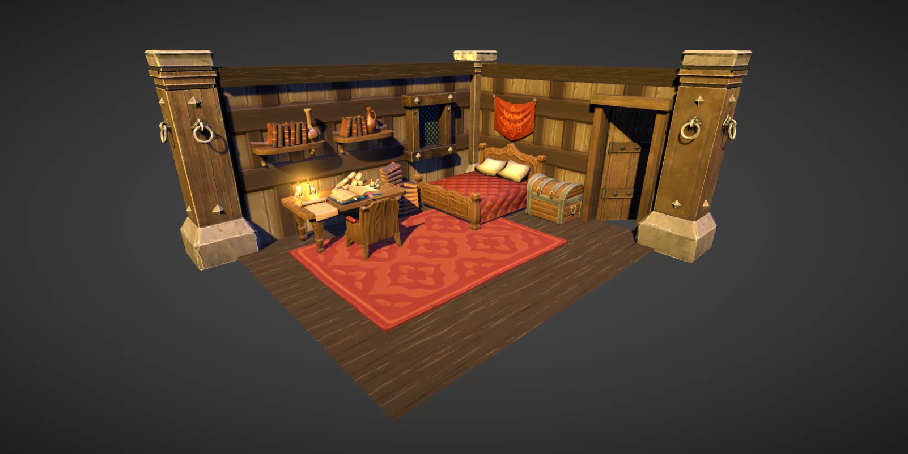

Project Overview
This tool enables users to build anything from small rooms to entire villages, including complex houses, dungeons, and large-scale buildings, all while adapting to specific needs with an intuitive and efficient approach. Kumal supports both grid-based environments, such as hexagonal layouts ideal for strategy and board games, as well as non-discretized environments, perfect for open worlds, narrative-driven adventures, or immersive experiences.
Throughout this project, I took on multiple roles, adapting to different needs as the development progressed. My primary responsibility was integrating the system into Unity3D and developing the front-end using UI Toolkit. One of the biggest challenges I faced was mastering this relatively new framework, which had limited resources available online. Finding reliable sources on best practices was difficult, leading to a process of extensive trial and error.
A key objective of the project was ensuring that generated environments could be either discretized into hexagons or fully open-ended, depending on the user’s preferences. I conducted research on the state of the art for similar tools, analyzing existing competitors and their methodologies. Additionally, I designed the 3D module system used to instantiate buildings, biomes, and models in Unity3D’s scene. This involved developing the instantiation process, handling serialization/deserialization, and managing models dynamically at runtime, all while interacting with Unity3D’s Editor API.
Beyond development, I also took on supervisory and management responsibilities. I oversaw programming interns, assigning and tracking their tasks while ensuring project deadlines were met. Given that Kumal was funded through the Next Generation EU program, I was also responsible for compiling deliverables and tracking submission deadlines. Additionally, I took charge of creating promotional videos, handling everything from scripting and recording to editing and post-production.
 
